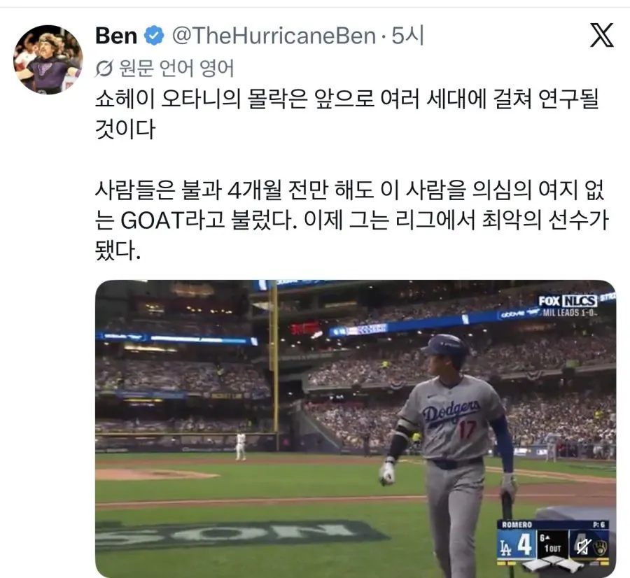

육아로 인해 에이징 커브 씨게 왔다고 함
ops가 0.5도 안된다고. 타율은 1할대

육아로 인해 에이징 커브 씨게 왔다고 함
ops가 0.5도 안된다고. 타율은 1할대
부상도 있어서 뭐 갈수도 있지
졸스신도 아름다운 10년 직후 커리어 막장으로 갔으니깜
오타니는 뭐 부상만 해결되고 타자에만 집중하면 여전히 강력한 mvp후보라 보긴 함
다리부상 아녀?
너는 딱 크보다
한화로와서 증명하도록
부천 fc 와서 축구할때가 된듯
일본애들 국뽕 못하겠네
걔넨 오타니빼도 국뽕재료가 좀 많긴 해..
무슨소리임 승객이 열지않아도 문이 열리는 japan taxi가 있는데

일본을 잘 모르는구나
저러다가 이제 조금 고개들면
개쩌는 서사로 가족이랑 국민들의 염원 등에업은
오타니 보여주면서 서사 빌드업함
부상때문에 밸런스 작살난듯
육아보단 부상이..
이번 시즌 저지랑 비슷하다 보면 됨 저지는 결국 부상 때문에 포시 못뛰고 팀 광탈
오타니는 부상 달고 후반기에 쉬다가 포시 복귀했지만 존재감 0 팀이 양키스보다 더 탄탄해서 상위 라운드까지 올라오긴 했는데 밀워키가 이번 시즌 다저스보다 강해서 잘못하면 여기서 떨어질수도
육아때문에 루틴깨진 것도 있는데 부상이 존나 큰거같더라 걸을때 쩔뚝거리면서 걸음
월시 욕심때문에 좀 억지 부린듯
진짜 예전엔 타석에 서고 그 무표정으로 무조건 친다는 포스가 있었는데
슬프구만
육아보단 부상 때문 아닌가...
110타석 연속 무홈런 1할5푼..
성적만 보면 이미 벤치갔어야했는데
벌써 저물기엔 아까운 선수긴 한데
월시도 몇번 우승했고 50-50 정점도 찍었으니
할만큼 한거 아닌가 모르겠네
본인 스스로가 이미 다 닳아버린게 아닌가
그런 생각이 든다
넌 키움이 딱이야 하현승 계약금 받는거 봤지
못지않게 챙겨준다 우리가
육아는 솔직히 소소한 사유일듯. 여차하면 마누라가 100% 해줘야지.
근데 부상당했는데 욕심부린건 씨게올듯.
육아라...
키움와라 다시 mlb에 포장잘해서 보내준다
근데 이정도로 단기간에 훅갈수가 있나